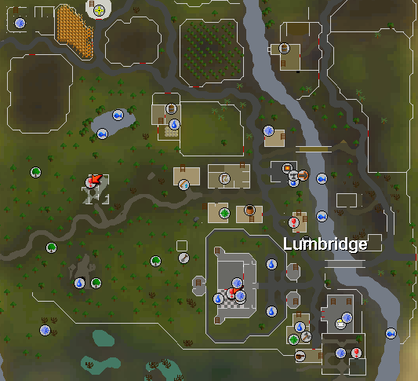

Lumbridge

Lumbridge ( Lum-Bridge ) is the starter town in 2009scape.
Getting There
- Use your home teleport ( In 2009scape, there is no limit on how many times you can use it.
- You can use a lumbridge spell teleport for a quick way.
- You can use a lumbridge teletab.
Features
- Tons of tutorial npcs.
- A few fishing spots
- Low level monsters to train on
- There is a furnace but pretty far from the only bank at the top of the castle.
- There is a range ( cook-o-matic ) has the lowest burn rate for lower tier cooking items in the game.
History
A town was settled on the River Lum by migrating human nomads. A bridge was made over the River Lum connecting the areas separated by the river. They named the town after the River "Lum Bridge" or "Lumbridge". The Land is ruled by the Duke Horacio but as part of Misthalin it ultimately answers to King Roald III.Banks
Lumbridge only has one bank in 2009scape. Since the Recipe for Disaster is not added yet, there is only the bank upstairs of castle. This will change with the addition of the quest. The chest was originally removed since items like the cleaver were equivelant to a runescape scimitar which resulted in the players not needing to play the game in order to get upgrades.Monsters
Cows ( Level 2 ) Chicken ( Level 2 ) Farmer ( Level 7 ) Ducks ( Level 1 ) Goblins ( Level 2 )Npcs
Duke HoracioSigmund
Lumbridge Guide
Doomsayer
Bob
Victoria
Lachtopher
Cook
Hans
Millie Miller
Fred the Farmer
Father Aereck
Explorer Jack
See Also
Varrock - is where the King lives who is in control of the Duke of Lumbridge.Update History
12 July 2021 - ( Update )
Note: If you see something not on this page that currently is in-game please let Summer know.